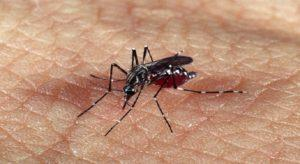

Sintomas da dengue
A dengue é uma doença febril aguda, sistêmica e dinâmica, variando desde casos assintomáticos a quadros graves, inclusive óbitos. Nos casos sintomáticos pode apresentar três fases clínicas: febril, crítica e de recuperação.
A primeira manifestação é a febre, geralmente acima de 38ºC, de início súbito e duração de 02 a 07 dias, associada à cefaléia, cansaço, mialgia, artralgia, dor retro-orbitária ou exantema.
Com o declínio da febre (entre o 3º e 7º dia do início dos sintomas), grande parte dos pacientes recupera-se gradativamente. No entanto, alguns podem evoluir para a fase crítica da doença, iniciando com sinais de alarme.
A dengue pode evoluir para remissão dos sintomas, ou pode agravar-se, exigindo constante reavaliação e observação, para que as intervenções sejam oportunas e os óbitos não ocorram.
